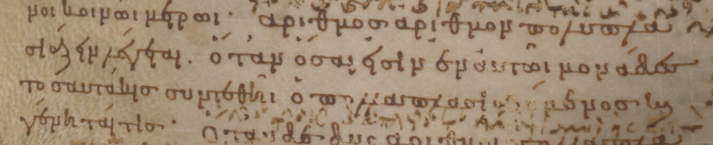

このページに資料を置く。下の九九表はニコマコス『算術入門』第1巻19章から(ケンブリッジ大学図書館蔵16世紀の写本MS Kk.5.28, 31v)。Teubner発行の19世紀の刊本と英訳Karpinski (1926: 217)も閲覧できる。
『原論』の写本で現存する最古のものは、ボドリアン図書館所蔵のMS D'Orville 301。パトライのアレタスが書記のステパノスに筆写させ888年に完成したことが、依頼者の書き込みから分かっている。アレタスは、『ビブリオテカ』の編者フォティウスの弟子で、後にカッパドキアはカエサレアの大司教になった。 この写本は注解者アレクサンドレイアのテオン(悲運の女性研究者ヒュパティアの父)による追加を含み、現代の校訂本では異本と扱われる。ただし、乗法の定義では校訂本文とほぼ同じである (123r)。

最初に出版されたギリシャ語の『原論』は、Grynaeus (1533)の校訂にかかる。乗法の定義は88ページ。